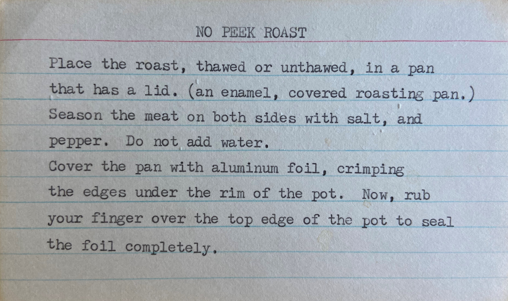
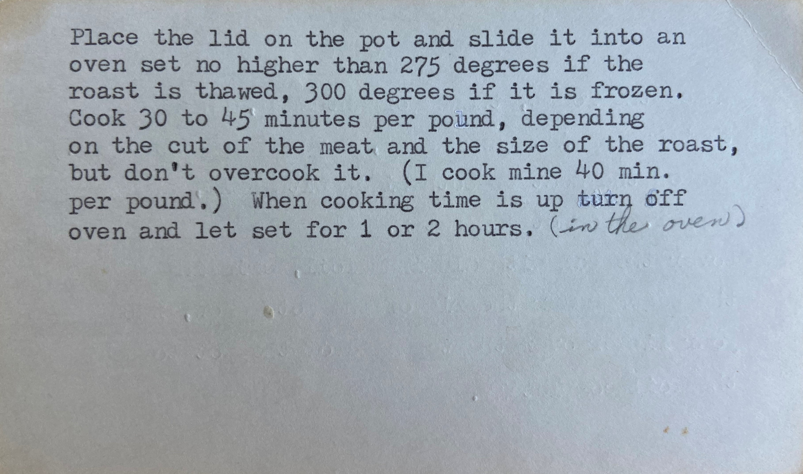

August
It was already the beginning of the first day of August. “Where did July go?” wondered Iris. She curled up on the loveseat with a freshly brewed cup of vanilla hazelnut coffee and began to type up the first BRG text and email to remind everyone to start reading today. Iris finally settled on the following—short and sweet—or so she hoped. We’re reading Proverbs 1 today and continuing each day with the next chapter. Thanks for reading with me! Iris’ dad, one of the few she had emailed, sent her a second email that morning telling her he was excited to dig into Proverbs again. Since her mom’s passing, her dad emailed her every morning and she looked forward to hearing from him. It wasn’t so much what was in the email, but that he thought of her each day; he always said that he, “Wished the best to her this new day.” Iris would, almost daily, send him an evening mail. It was something they both enjoyed and it kept them in the know about what was going on in each other’s lives. Ryan texted right back with, “Thanks! I’m excited for this!” and Iris wondered what she would do without him; their friendship went back to high school and she thought of him as a brother. She also heard back from Gina who had replied to her original text with, “That sounds awesome! I’d love to join you.” Her reply to the short text was just as encouraging to Iris and she thanked God for wonderful friends. She completed a couple of house chores then decided to move upstairs and read chapter 1 in Proverbs. Iris picked up her Bible, sat in her mom’s favorite chair, and easily flipped to Proverbs 1. It wasn’t long until a verse jumped out at her; it was verse 7. She looked it up in a couple of translations and found they were all pretty similar. She decided to go with the King James Version and wrote it out on an index card in a navy pen.

What a great verse to learn and how appropriate given the goal of the BRG—to learn more about the Lord and seek wisdom and instruction. Iris knew one thing for sure; she was not eager to be a fool! Reading Proverbs was going to be very useful to her; she prayed that would be true for her dad, son, and the eight people in the BRG.
+++++++Midway through lunch, Stephanie retrieved her phone from the back pocket of her scrubs, unsilenced her phone, and saw that she had a couple of messages. After putting down her egg salad sandwich and thoroughly wiping her fingers on a napkin, she touched her phone and saw a text from Iris reminding her to read Proverbs 1 today with the BRG; that meshed with the calendar reminder she had seen first thing this morning. “I’ll text Iris back when I get home from work,” she thought. “Maybe...maybe I should take a chance in a couple of weeks and give Iris a call. I’ve thought about her often since she texted about the BRG; she might even be curious how people are doing with reading Proverbs by then.” She tapped on her phone’s calendar icon and made a quick reminder on the 16th to call Iris. She didn’t know if she would get it done that day, but she could set it as a reminder each day until she got a chance that week. Stephanie had only a few minutes to finish her lunch and get ready for a busy afternoon of appointments. The afternoon did not disappoint. Stephanie was delighted when five o’clock rolled around. Luckily, she didn’t have any errands to run after work so she arrived home a little earlier than usual. “Oh! Mandy’s home too, that’s a nice surprise!” She pulled the car into the garage hoping Mandy wasn’t already on her way out. Slightly rushing, she made it inside and heard the shower running upstairs. “Whew, at least she’s still home for a while, but I bet she is working tonight. Maybe I’ll have time to ask about her day,” she hoped. Since Mandy usually takes long showers, Stephanie decided to text her a cheery hello to let her daughter know that she was home too. Mandy always took her phone with her and would set it on the bathroom counter so she could listen to music while taking a shower; Stephanie knew Mandy would see it when she got out of the shower. Texting her daughter reminded her to send a note to Iris and thank her for the text to start reading Proverbs: Good evening, Iris! I received your text and am just about to sit down to feed my soul with chapter one. Thanks for reminding me! Because Mandy was upstairs and James wouldn’t be home for another 45 minutes, she thought it the perfect time to start reading. After changing clothes, she retrieved her well-worn New King James Version (NKJV) Bible. This particular Bible was very precious to her because it had been given to her by her parents on the day of her wedding; they had also given James a Bible that day. With her Bible in hand and slippers on her feet, Stephanie found a comfortable cushion on the sofa, facing the stairs, where she was hoping to catch Mandy. She opened her Bible to chapter one of Proverbs and decided to read the chapter aloud. It wasn’t a very long chapter and she found that verse 5 attached itself to her heart. She decided she would write the verse in her journal and meditate through it. First, she asked the Lord for His insight and for the wisdom to apply it in her life, then she focused on each word of the verse as she read it slowly and silently. When she repeated this a few times, she just sat. In silence. Waiting. No distractions. Waiting to hear the still, small voice of the Holy Spirit. As she listened. In silence. It felt as if only seconds had passed, but it had been several minutes when Stephanie opened her eyes and then wrote the verse and her thoughts that came as a response to her quiet retreat.

Stephanie closed her journal and read the entire chapter aloud once more. Just as she started the last verse she heard a voice hopping down the staircase. “Who will dwell safely and live without fear?” Mandy asked. “Oh,” Stephanie looked up to see Mandy in her work clothes, “anyone who listens to Wisdom’s counsel,” Stephanie smiled, hoping Mandy would pause for conversation. “That makes sense. Whatcha reading?” Instantly Stephanie’s mind recalled the last time she was reading on the back porch when Mandy had arrived home from babysitting, interrupted with a question, then proceeded to talk without giving her mom a second to answer. At this moment, Stephanie chuckled to herself, wondering if she actually was going to have a chance to answer this time. “The book of Proverbs,” she immediately began her reply. “I just started with a group that’s going to read a chapter each day this month.” Mandy thought for a second as she gave her mom a squeeze, then responded with interest, “That sounds cool, maybe I should try that someday.” Mandy quickly grabbed an apple from the fridge on her way out the door. “I’ve only got to babysit until 9 tonight, so— “How was your—?” —I should be home by 11! See ya, Mom!” And that was the end of that conversation. Stephanie was thankful for the few moments, though, as it had been a while since Mandy even paused to talk. She closed her Bible as she heard the garage door opening, signaling that James was home. “Hi, Hon! I hope you didn’t start anything for dinner because I brought Chinese! Mongolian beef with broccoli for me and chicken with vegetables for you. How’s that sound?” “Sounds like I need to get paper plates and plastic forks! Smells great dear, thanks!” The two sat down across from each other as Stephanie placed two glasses filled with water and lemon slices above their plates. “Joshua is at tennis practice until 7:30 and Mandy babysits until 11:00 tonight.” “I was just going to ask that question! Still reading my mind after nearly 22 years? It never ceases to amaze me,” James grinned. “So, how was your day?” Stephanie finally got to ask someone that question! James had a couple of funny stories from work, but overall it sounded like a pretty hectic day between his two offices. “Hence, the dinner,” James said, “I didn’t want to dry dishes tonight,” he explained while winking at his wife.
+++++++The next couple of weeks passed by fairly routinely for Stephanie. She was pleased that she had stuck to her plan of reading Proverbs nearly every day after work, keeping up with the BRG. On August 16th, Stephanie’s calendar reminded her to give Iris a call. Conveniently, James had called earlier to tell her he would be home a bit later, so after she read the chapter in Proverbs for the day, Stephanie thought it was the perfect time to phone Iris. She found Iris in her list of contacts and tapped her number. Five rings. “Maybe I should have texted her first,” Stephanie thought, but just when she was about to disconnect, she heard Iris on the other end. “Hello, Stephanie! What a nice surprise!” came the warm voice of Iris that endeared Stephanie to her in June. Stephanie responded cheerfully, “Hi, Iris! Did I catch you at a bad time?” “Oh no, dear,” Iris replied, “I didn’t have my phone near me, so it took me a bit to get to it, is all. How are you?” And soon the conversation filled with sharing and catching up, the topic eventually turning to the BRG. “So,” Iris began, not knowing what the response would be, but hoping it would be positive, “How is reading with the BRG going for you?” Stephanie didn’t have to think twice about her answer. “At first I didn’t know if I was going to be able to keep up with everyone, but I was surprised at how simple it has been to get into the routine of reading one chapter each day. I decided to read after work, before James comes home. That has been a good time for me.” “I think that’s a wise decision—to read the book of wisdom while transitioning from nurse to wife,” Iris encouraged. “Ha ha, yes, I agree. Funny thing though, Iris, I’ve grown increasingly eager for that portion of my day. However, I have to admit it took me a few times to notice that on the days I chose to spend that time after work running errands instead of spending the time with God, it was more difficult to keep my attitude pleasant in the evenings, especially if I had a rough day at the clinic. Then I would be so tired while reading later in the evening, the time just didn’t feel the same; once or twice I almost fell asleep!” “I completely understand what you are saying, Stephanie. When I first started to make reading God’s Word a daily habit, I would sometimes allow other things to push it down if not off my priority list. I would notice a difference in how the day went for me, too. But that also turned into the incentive I needed to be consistent. Do you think being a part of the BRG is helping in some small way with that? “Oh definitely!” Stephanie answered. “Your encouraging reminder texts and thinking that others are reading even though they may be having a trying day helps me from giving myself an excuse to not read. As a matter of fact, this last week I successfully organized my errands so I could get them done throughout the week during my lunch hour instead of after work. So, being a member of the BRG has helped me stay committed to reading God’s word daily and at a dedicated time.” “That’s wonderful, Stephanie! I hope the others are enjoying a similar experience,” Iris responded, feeling encouraged. “You mentioned you have a consistent time, do you have a special place you like to read?” Stephanie talked about the couch and her glider on the back porch; Iris then shared how she liked to read on her deck when it wasn’t too hot and humid, and how she enjoyed hearing the sounds of summer while reading the words of God too. Stephanie agreed and was glad that the two of them had found even more things they had in common with each other. As their conversation came to a close, Stephanie felt that talking with Iris had been like talking to a long time friend; she expressed her gratitude before saying goodbye. “All I know is that I appreciate greatly the time I now make to be with God reading His Word, Iris. It is because you listened to the Holy Spirit and then acted in faith by starting the Bible Reading Group. I am so thankful you thought to include me.” “Me too, Stephanie. I’m learning that it’s amazing what God can do with one seemingly simple act of faith—and I am quite certain that Someone encouraged me to invite you.” “Me too! Well, I should let you get back to your day; it’s been great catching up with you, Iris, thanks for the visit,” Stephanie closed. “You take care,” Iris replied, “and have a wonderful evening. Goodbye.” Stephanie tapped the red circle on her screen, set her phone down and immediately thanked Jesus again for the wonderful opportunity to belong to the Bible Reading Group, and for Iris’ strong faith. Iris on the other end, immediately thanked the Holy Spirit for giving her a dose of courage to act upon this idea of hers, well, really His, to reach out to others and start a Bible Reading Group. To her this was the beginning of a co-mission, working with the Lord to build up the body of Christ. She wondered where it might lead.
+++++++It was nearing the end of the month and Iris had prayed and pondered which book they might read next, that is, if anyone wanted to keep reading. She thought she’d go with Genesis which was the other book listed on the BRG tract. She put together another text for the group asking if Genesis would work and to let her know if they had anyone they would like to invite to join them. She suggested they ask their friends, relatives, and coworkers; she had also shared that her dad and son were reading too. Then, for those interested, to ask them if they were OK sharing their phone numbers and first names with Iris. If so, Iris would take care of sending the reminder texts to them a few times during the month. She hoped they might be able to add a few more readers to the group. Iris felt, and a few texts from others had seemed to indicate, that reading Proverbs had been a blessing. Iris decided she would go through her contacts again and choose a few more people to invite to read in September. As she scrolled through her contacts, Iris saw Ruth’s name and wondered if she might be interested. She had met Ruth at least a year and a half ago at the public library at a genealogy meeting about how to find relatives that were war veterans. Ruth had done a lot of research on her family regarding that exact topic for nearly two decades now. She had shared that she had started to become interested in genealogy in her fifties when her dad began telling his dad’s, Ruth’s grandpa’s, war stories which led to him opening up about some of his own. The insights and tips that she shared with Iris were so helpful! Even though Iris hadn’t had much time since to work on genealogy, she was very grateful to Ruth for her assistance. They had exchanged phone numbers, but sadly Iris had not followed up with her. She had a vague memory that Ruth’s husband was having some health issues and she hoped he was doing better now. “It’s worth a shot,” she said to herself and decided to send Ruth a note and see if she was interested in the BRG. “Even if she’s not interested," thought Iris, "I would feel better if I checked in with her.” Some of Ruth’s mannerisms and the way she talked reminded Iris of her Aunt Helen whom she adored.
+++++++As she slowly rolled out of bed, Ruth wondered why she was so stiff. She reached to the ceiling and felt a twinge in her back and one in her shoulder. She had done her stretches yesterday and had almost had those eight glasses of water she heard touted as needed for the body. It didn’t seem possible that the cake on her last birthday had a 7 and a 2 on it. “Wouldn’t it be great if it read 27?” Then she chuckled, “Those 27-year-old kids don’t appreciate their bodies like they should!” Ruth was not really cranky at young people, but she was a little frustrated with herself for not staying as active as she should have this last year. Her weight was slightly under the “average” curve and she liked taking walks with her companion Rufus—stretching and strength training, however, eluded her. Sure, she had started a new “workout” plan many times, always on a Monday, with the goal to lift weights and stretch a few times a week. She managed to make the goal on Monday and sometimes meet it on Tuesday, but then the week was over and she was stiff, not strong, and grumpy about it. “Maybe if Jack was still here,” she thought wistfully. “He would often tell her how beautiful she was and then add quickly—on the inside AND the outside.” Jack had become ill suddenly about a year ago and passed away a little less than six months later. His faith was so strong during his illness that she knew if there was a Jesus her Jack was with him; there wasn’t anything else to explain it. She shook her head and knew she shouldn’t think about Jack this early in the morning. Ruth got ready and headed to the kitchen where she made a soothing cup of coffee. It was a new maple flavor and with a little cream, actually she used half and half, it was fantastic! She grabbed her phone while it brewed to see if there were any messages she needed to respond to before running a few errands. There were three, including one from her son who had sent the message the night before telling her to “sleep well.” She missed him. He was doing great, living on the east coast, and enjoying life. Ruth was glad all her children were a “success” by the world’s standards, but she hoped they didn’t get too close to the world. The second text was from Shelly wanting to know if she wanted to walk at a park later and asking her to bring Rufus to keep them from just sitting on a park bench and gabbing. Shelly sure had that right! The third one was from a number that she didn’t have labeled which was odd as she rarely gave her cell number to anyone unless she knew them well. She opened the text and found this long message: Hi Ruth, I don’t know if you’ll remember me, but we met at a genealogy meeting at the library well over a year ago. I’ve thought of you often and wondered how Jack was doing; please forgive me for not getting in touch sooner. My reason for writing is that I’ve started a BRG which stands for Bible Reading Group. It’s kind of a long story how I stumbled upon doing it, but I wondered if you’d be interested in joining it. For the month of September we’re going to read Genesis, the first book of the Bible. On weekdays we’ll read 2 chapters and on weekends just 1 each day. There’s really no commitment except to read along with the group either 1 or 2 chapters a day in the Bible. If you’re interested, I’ll also text you once in a while during the month to remind and encourage you. That will help keep me and us on track given the number of chapters per day will vary this month. There is no pressure at all. Again, I hope you’re doing well and sorry for the long text! Iris Ruth smiled and wondered if Jack was behind this somehow. He was always encouraging her, never nagging, to read the Bible more than she did. Her parents, especially her mom, would go to church and encouraged Ruth to attend the Wednesday night youth group and sing in the choir when she was a kid. She supposed they were a religious family, but Ruth had grown tired of what seemed to her the same sermon every week. She had stopped participating in church and related activities when she left home. Jack had always respected her faith, or rather lack of it, but he would joyfully talk about Jesus and his second coming. She tried to recall how he said it when he was talking with her. “What was it? Something like, ‘The Lord will come down from heaven with a shout and with the trumpet of God!’” Jack’s eyes would dance and the joy he exuded was palpable. “I wonder if I could have that kind of joy at my age?” Ruth thought. “Maybe I should try this BRG.” As Ruth continued to think about it, she tried to recall details about Iris. She thought Iris was about twenty years younger than her. They had struck up a conversation at the Wars Genealogy Class because some of their relatives had been in different wars. She recalled that they had shared internet sites and books at the genealogy meeting. As she thought back on it, Iris had a knack for organizing things so she wasn’t too surprised by her text about the BRG. It’s kind of odd that she never mentioned her faith when we met at the library during that entire six week class. Ruth decided she better get going on those errands or she wouldn’t get anything done today. “I’ll sleep on it tonight and text Iris in the morning.”
+++++++It was a joy to Iris that most of those in the BRG wanted to continue; several members had texted her that they were very excited to read Genesis and, of course, Jeremy and her dad were in! Three people had sent her a note saying they needed to drop out after Proverbs, but two indicated to keep them in mind for October. Their reasons for dropping out were reasonable. One person needed to care for his dad, another was going to be traveling out of the country for work, and the third had been asked to lead a Bible study at her church. While Iris understood their reasons and sympathized, particularly with caring for a parent, she did struggle sometimes to truly understand. Spending a few minutes reading a chapter or two a day in a book of the Bible seemed like such a small commitment of time and effort. She struggled sometimes to find the time to read too but also knew in her heart that was the best way to grow her faith and take steps toward becoming more like Jesus. “I think there were a couple of verses in Proverbs that resonated with me about that,” Iris said to herself. She pulled out her phone and opened her Bible app. After several minutes, she found the three verses she was looking for in the English Standard Version (ESV) and read Proverbs 4:20-22 out loud: 📖 My son, be attentive to my words; incline your ear to my sayings. Let them not escape from your sight; keep them within your heart. For they are life to those who find them, and healing to all their flesh. “Wow, I like that,” Iris expressed aloud. “I remember Mom talking about a verse that sounded similar to it, but with the word ‘bones’ in it. I wonder if it’s the same verse in a different translation?” Iris did a quick search on the internet and found the verse she was looking for in the New International Version (NIV); it had a familiar ring to it. While she was wrong about it being the same verse in a different translation, it was a verse that made her recall the one she had put on an index card and learned from Proverbs 1:7 earlier in the month. She recited it from memory: 📖 The fear of the LORD is the beginning of knowledge: but fools despise wisdom and instruction. She continued reading the verse she had found with ‘bones’ in it starting with the verse before it in the book of Proverbs, chapter 3, verses 7 and 8: 📖 Do not be wise in your own eyes; fear the LORD and shun evil. This will bring health to your body and nourishment to your bones. So, tying those six verses from Proverbs together, Iris knew she needed to focus on fearing the Lord, shunning evil, and being attentive to God’s word. Iris lingered on the phrase “For they are life to those who find them,” and realized that “they” meant God’s Words—the Bible. She wondered if “life” would mean “eternal life” to those who embrace and know His Word. That seemed to make sense but, if she remembered, she might confirm that with a couple of friends from church. Iris also knew that just having knowledge of the Bible wasn’t enough. What was enough was having true faith in the Gospel of Jesus Christ including his death, burial, resurrection, and ascension. “To know about the Gospel,” she thought, “everyone needs to read God’s Word or have someone who is willing to share the Good News from the Bible with them. Then, after learning the Gospel, everyone has the choice of either accepting or rejecting Jesus as his or her Savior from sin and receiving eternal life.” Iris made index cards with her new sets of verses and wondered if she had any chance of learning five more verses! Maybe her daily puzzles would give her brain the boost she needed to do so. She would give it a try and, along with that, pray for those who had dropped out of the BRG and ask God to work in their lives so they might know and do his will. She also made a mental note to ask for forgiveness for judging others. Iris smiled as she thought, “I bet there’s a few Bible verses about that!” Her final thought before she fell asleep that night was that this BRG wasn’t hers; it was God’s!
+++++++The next morning was Sunday and Ruth got up early so she could put a “no peek” roast in the oven for lunch. It was the easiest recipe and always turned out well. She thumbed through her wooden recipe box and pulled out the card and read through it quickly.
Ruth flipped the card over and continued reading.
She noticed the recipe was one her mom had typed and given to her, along with many others, the summer she had taught her how to cook all her wonderful and favorite recipes. “As well as easy,” Ruth declared aloud. Memories of that summer flooded back into her mind as she pictured the two of them cooking in their house on 5th Avenue. It certainly wasn’t THE 5th Avenue, but she wouldn’t trade those cooking lessons for a famous address! As Ruth continued her trip down memory lane, she recalled how, when her mom asked her part way through the summer if she enjoyed cooking, she had replied, “Not particularly, but I love spending time with my mom.” Her mom had given her a hug and commented that she needed to keep stirring so the hot fudge didn’t scorch. “Now I’ve done it,” thought Ruth, “I’m going to have to make homemade hot fudge one of these days; it is so yummy!” As she returned to the present, Ruth noticed the recipe card was starting to yellow from age but she appreciated seeing her mom’s handwriting at the end of the recipe. “Mom was such a good cook,” Ruth thought. “She loved cooking for her family and never complained.” Ruth recalled how Mom would surprise her with her favorite meals when she would come home to visit, even when she was in her 50s! Her chicken and noodles on mashed potatoes was superb! Of course, Mom would always include homemade coleslaw with her “special sauce” recipe. She would also prepare a terrific dessert like rhubarb crunch or peach cobbler to finish off the meal. Those desserts always had to have a healthy dollop of whipped topping! Ruth was kind of embarrassed because she realized she was salivating worse than Rufus did when she had a special treat for him! Thinking back on her mom and their many conversations, she recalled the many Sunday mornings where her mom would get up early to put a roast in the oven so they could have a wonderful meal when they got home after, as her mom would say, “being fed by the Word.” Those thoughts made Ruth remember the text Iris had sent her about reading the Bible with a group. She’d get the roast in the oven, read over the text, and respond. With the roast in the oven and a second cup of coffee next to her, Ruth sat in the rocking chair and reviewed the message from Iris. She sent her the following text: “Dear Iris, it is nice to hear from you. I hope things are well with you and your family. Things have been a little hard for me this last year. My dear Jack passed away and it’s been challenging to move on without him. As to your question about reading the book of Genesis with your group, I’ll give it a try. I’m not sure I’ll stick with it, as it’s been awhile since I’ve done much reading in the Good Book (that’s what my Dad called it). I do know Genesis is the “beginning” book so perhaps this will help me to begin again! Thank you for thinking of me! Fondly, Ruth.